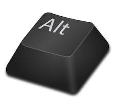

Tekniker: snabbkommandon och genvägar
Det finns många kortkommando (tangentkombinationer) som
låter arbeta mer effektivt jämfört med använda musen.
Av dem som är mest använbara och jag utnyttjar mycket av dem kan jag
påpaka:
Åtta kortkommando som används jämt och ständigt
- Ctrl+Shift+N: Skapa en mapp
- Ctrl+N: Skapa en file
- Ctrl+S: Spara filen
- Ctrl+C: Kopiera
- Ctrl+X: Klippa ut
- Ctrl+V: Klistra in
- Ctrl+Z: Ångra
- Ctrl+U: Ogöra ångring

kortkommando för att flytta rader
- Alt+down/up: Flytta raden som markören är på nedåt/upåt
- Ctrl+Shift+K: Tar bort den befinliga raden
Guld kortkommando för utvecklare
Ctrl+Shift+I: Nå Koden bakom sidan!
